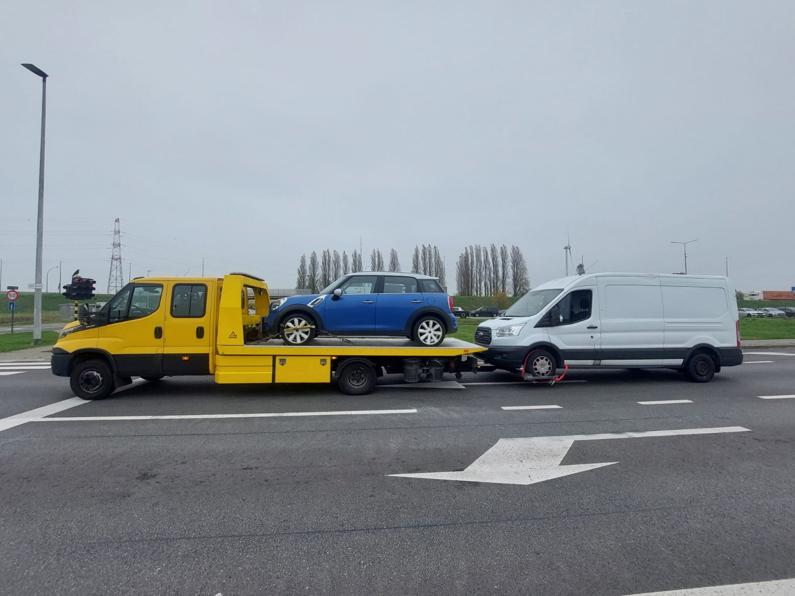

Pechverhelping
Accu, band, startprobleem of uzelf buitengesloten — vaak kan het probleem meteen ter plaatse opgelost worden.
Binnen ongeveer 13 minuten sta ik aan de rand van Deurne. Bel nu.

Van een lege batterij tot voertuigtransport na een aan- of verkoop — vertel wat er is, dan bekijk ik wat nodig is.
Accu, band, startprobleem of uzelf buitengesloten — vaak kan het probleem meteen ter plaatse opgelost worden.
Bij pech, een ongeval, berging of wanneer een voertuig naar de garage moet, haal ik het veilig op.
Van en naar thuis, een garage, de haven, een koper of verkoper — gepland of dringend.
Ook bestelwagens, heftrucks, machines en internationaal transport horen erbij.
Deurne ligt dichtbij: meestal sta ik binnen ongeveer 13 minuten aan de rand van Deurne, bij de afrit vlak bij de Lotto Arena. Van daar ben ik snel bij u, waar in Deurne u ook staat. De meeste recuperaties gebeuren op en rond de N120 en de zijstraten daar.
In Deurne ken ik onder meer de garages langs de Ten Eekhovelei en de Bisschoppenhoflaan. Op de Melkerijstraat werk ik samen met Old School Mechanics voor specialistisch motorwerk.
Voor onderdelen werk ik samen met Victoria Auto Parts en Recuparts — daar lever ik ook wel eens een voertuig of onderdeel af, of haal ik een motor op die te groot is om zelf te vervoeren. Op de Melkerijstraat werk ik samen met Old School Mechanics voor specialistisch motorwerk en met hun buur AM Tronic voor het programmeren van boordcomputers.
Ik haal geregeld voertuigen op bij Ford Van Mossel en andere dealers in Deurne.
Ik ben ook actief in onder meer deze gemeenten.
Praktische antwoorden voor wanneer u pech hebt of een voertuig moet laten vervoeren.
Bel direct. Vertel waar u staat, welk voertuig u hebt en wat er gebeurd is.